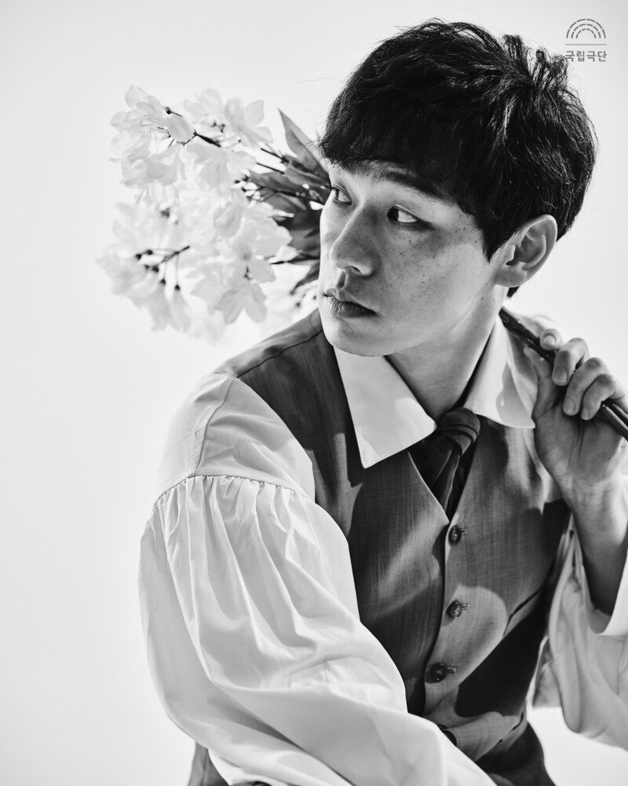
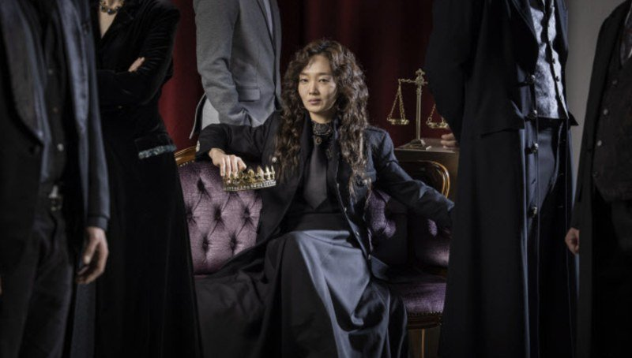

This annotated bibliography examines major critical interpretations of Hamlet's character across different historical and theoretical contexts. It focuses on a critical movement from early Romantic admiration of Hamlet as an attractive and inwardly refined prince toward later readings that emphasise paralysis, psychological disturbance, and destructive or emotionally disengaged behaviour.
My interest in this critical trajectory emerged after attending a production of Hamlet at the National Theatre in London a few months ago. In this production, Hamlet appeared neither charismatic nor emotionally engaging, but instead destructive and paralysed by indecision. This response prompted me to reflect on how my own expectations of the role had been shaped. Those expectations were strongly influenced by theatre and musical productions in South Korea, where Hamlet has often been portrayed as noble, inwardly refined, and charismatic, with his philosophical introspection and emotional struggle contributing to an attractive and compelling stage presence. I have since come to recognise that this image represents only one strand within a much broader critical tradition. The central question driving this bibliography is: how, and through what critical mechanisms, has Hamlet shifted from a figure of Romantic admiration to one associated with paralysis, psychological disturbance, and emotional disengagement — and what are the consequences of that shift for performance? The sources selected for this bibliography trace how Hamlet's character has been reinterpreted through changing critical frameworks, demonstrating how these shifts influence performance traditions and audience expectations.
Entry 1 Early Romantic Readings: Hamlet as a Figure of Identification
Thomas Kullmann argues in 'The Hamlet Project in Goethe's Wilhelm Meister's Years of Apprenticeship' that Hamlet came to be widely misinterpreted as a weak figure with a "beautiful soul" whose moral inwardness prevents decisive action.1 According to Kullmann, this interpretation became a powerful model of identification for young German readers and later gained influence across Europe. This reading emerges most clearly through Goethe's novel Wilhelm Meister's Apprenticeship, in which the fictional protagonist presents Hamlet as morally elevated and inwardly refined. Kullmann further argues that this interpretation overlooks important historical and cultural contexts, including early modern Christian opposition to revenge and the ethical problem of regicide in Shakespeare's time.
Hamlet was written around 1600, while Wilhelm Meister's Apprenticeship was published in 1795–96, nearly two centuries later. Goethe's novel marks a decisive shift in Hamlet criticism, moving the focus away from political action or revenge and towards moral inwardness and personal feeling. It is largely after Goethe that a distinctly Romantic image of Hamlet becomes dominant and culturally influential.
Despite these omissions, the Romantic image of Hamlet proved deeply appealing. The cultural power of this interpretation can be understood through what is often called the 'Werther effect', in which literary figures become objects of emotional identification. Goethe's The Sorrows of Young Werther, for example, was associated with waves of imitative behaviour among young readers. Within this context, it is understandable why Hamlet came to be seen as a figure of inward sensitivity and moral struggle.
Entry 2 Hamlet as a Moral Tragic Figure
In his lectures on Shakespearean tragedy, A. C. Bradley argues that tragedy is driven by character revealed through action, rather than by psychology separated from dramatic movement.2 For Bradley, Shakespeare's tragic figures possess a certain imbalance or one-sidedness of character, which leads to catastrophe as the play unfolds. Rather than treating Hamlet as a psychological case, Bradley focuses on how moments of thought lead to decisions and consequences within the dramatic structure.
Bradley argues that Hamlet's delay is not simply the result of the revenge task imposed by the Ghost; in the 'To be or not to be' soliloquy, Hamlet reflects primarily on suicide rather than revenge, restrained by uncertainty about death itself. For Bradley, this demonstrates that Hamlet's weariness of life exists independently of the revenge plot.3
Hamlet's moral nature is most clearly revealed, in Bradley's view, in the scene with his mother. Here, Hamlet's aim is not revenge but moral correction: he seeks to save Gertrude's soul rather than punish her. Bradley highlights the exchange in which Gertrude cries, 'O Hamlet, thou hast cleft my heart in twain' (3.4.147), and Hamlet replies, 'O throw away the worser part of it' (3.4.148), as representing the height of Hamlet's moral seriousness.4 At the end of the play, Horatio's final words, 'Now cracks a noble heart. Good night, sweet prince' (5.2.311), confirm, in Bradley's view, Hamlet's essential nobility.5
From an actor's perspective, Bradley's emphasis on the link between character and action can be especially useful, as it discourages performances that focus solely on mood or introspection and instead foregrounds intention, decision, and dramatic consequence. At the same time, the very clarity that makes Bradley's approach attractive for performers also reveals its historical limitations. Bradley's interpretation reflects the priorities of late nineteenth- and early twentieth-century criticism, when Shakespearean tragedy was largely understood through moral character. While persuasive within its historical context, this approach tends to place Hamlet at the centre of the play, often reducing the importance of other characters and broader theatrical dynamics.
Entry 3 From Character to Case: Psychological Readings
Where A. C. Bradley understands Hamlet's delay as a moral and emotional problem, Ernest Jones marks a decisive shift in emphasis by redefining Hamlet as a psychological case shaped by unconscious conflict. Jones's essay 'The Œdipus-Complex as an Explanation of Hamlet's Mystery' was first published in 1910, at a time when Freudian psychoanalysis was beginning to influence literary criticism.6 In this essay, Jones organises earlier Hamlet criticism into three main approaches: those that explain Hamlet's delay through temperament, those that emphasise the difficulty of the task, and those that focus on a particular feature of the task itself. This classification allows Jones to reject the first two approaches and argue instead that Hamlet's hesitation is best understood as a 'specific aboulia', a paralysis of will limited to the single act of killing Claudius rather than a general weakness of character.7
For Jones, this paralysis does not arise from moral uncertainty or from the practical difficulty of revenge. Instead, it is rooted in an unconscious repulsion towards the act itself. Killing Claudius would, in Jones's reading, activate Hamlet's repressed desires, making the act psychologically intolerable. As a result, the command to avenge his father becomes something Hamlet is unable to carry out, despite his intellectual clarity and verbal agility.8
This interpretation relocates the source of Hamlet's delay from ethical reflection to inner psychological conflict. I was reminded of this reading through my own experience as a theatre practitioner, particularly when encountering a Korean production of Hamlet (2006) in which Gertrude and Ophelia were played by the same actor. This staging foregrounded psychological entanglement rather than moral hesitation, offering a practical illustration of the kind of unconscious overlap and repression emphasised in Jones's argument.
Taken together, Jones's interpretation represents a significant turning point in Hamlet criticism. Hamlet is no longer approached primarily as a thoughtful moral agent wrestling with ethical choice, but as a figure paralysed by a localised psychological conflict that makes decisive action impossible.
Entry 4 Critical Consequences: Hamlet-Centred Readings
Despite their differences, Romantic, moral, and psychological approaches to Hamlet share a common tendency to organise the play around Hamlet's inner life. In Jillian Luke's essay 'What If the Play Were Called Ophelia? Gender and Genre in Hamlet', this Hamlet-centred critical tradition is directly challenged through a rethinking of Ophelia's role in the play.9 Luke argues that Ophelia should not be understood simply as a marginal or silenced figure whose meaning exists only in relation to Hamlet. Instead, Ophelia functions as a conduit for a wider story of female experience. As Luke explicitly states, 'she acts as a conduit for an essential story of female experience: abandonment, misogyny, patriarchal oppression, and sexual double standards.'10
Luke locates this challenge most clearly in the so-called 'mad scene' (4.1.159), where Ophelia appears on stage of her own will.11 Luke argues that through songs and anonymous ballads rather than elevated tragic speech, she resists being absorbed into a coherent tragic narrative centred on individual heroism. In this sense, Ophelia comes to function, in Luke's words, as 'the first feminist critic of Hamlet', exposing the genre's tendency to privilege male suffering as uniquely tragic.12
By repositioning Ophelia as an independent tragic subject, Luke's reading implicitly challenges the assumption that Hamlet's inner life is the play's primary source of meaning — and by extension, that paralysis and indecision are its central tragic concern. The central claim is not that Ophelia naturally dominates, but that the Hamlet-centred structure continuously suppresses a significance that is always present in the role. How this dynamic plays out in contemporary performance is examined through a primary source in Entry 5.
Recent gender-reversed productions at the National Theatre Company of Korea (2024), which present Hamlet as a princess and Ophelia as a male character, offer a further illustration. Although tragic authority is reassigned to a female body, the play's meaning continues to be organised around Hamlet's inner struggle. As a result, the hierarchy that privileges a single figure's suffering remains largely intact.


Entry 5 Primary Source: Robert Hastie's Hamlet, National Theatre, London (2025)
Hamlet, dir. Robert Hastie, with Hiran Abeysekera (Hamlet) and Francesca Mills (Ophelia), Lyttelton Theatre, National Theatre, London, attended 12 November 2025.
This production served as the initial prompt for this bibliography. Attended on 12 November 2025, it presented a markedly different Hamlet from the one that Korean theatre and musical productions had led me to expect. Under Robert Hastie's direction, Hiran Abeysekera portrayed Hamlet as a physically energetic, often comedic figure — restless, rapid-fire in delivery, and resistant to the inward, emotionally intense portrayal associated with the Romantic tradition traced in Entry 1. Where I had anticipated a noble, introspective, and charismatic prince, this Hamlet was cocky and at times almost anti-tragic in his levity.
Watching the production, I became aware of how strongly my own expectations had been shaped by the critical and theatrical traditions this bibliography examines. My prior experience of Hamlet had been largely through South Korean theatre and musical productions, where the character is typically presented as inwardly refined and emotionally compelling — a portrait that, as Entry 1 argues, descends from the Romantic image consolidated by Goethe. The distance between that expectation and Hastie's interpretation prompted the central question driving this bibliography: how have successive critical frameworks shaped what audiences expect from Hamlet as a character?
The production also offered a nuanced illustration of Luke's argument (Entry 4). The most widely praised performance was Francesca Mills's Ophelia, described by one reviewer as 'stealing the show'.13 This was not because the production structurally decentred Hamlet — Ophelia remained a peripheral figure within the play's overall organisation. Rather, the comedic underplaying of Hamlet created an emotional vacancy that Mills's exceptional energy filled by contrast. The play's hierarchy was not dismantled; but the suppressed potential Luke identifies in Ophelia momentarily became visible. This is precisely what Luke argues: not that Ophelia naturally dominates, but that the Hamlet-centred structure actively suppresses a significance that is always there. The critical reception's complaint of an 'emotional vacuum at its centre' further reveals how deeply ingrained the expectation of a commanding Hamlet remains — a product of the critical tradition this bibliography traces.
Conclusion
This bibliography has traced a critical trajectory from the Romantic image of Hamlet as an inwardly refined and attractive prince, through moral and psychological readings that gradually shifted emphasis towards paralysis and disturbance, to feminist challenges that question the very centrality of Hamlet as the play's organising figure. What emerges from this survey is that each interpretive framework does not simply describe Hamlet's character — it actively shapes what audiences and practitioners expect from him on stage. As my experience of Hastie's 2025 National Theatre production demonstrates, those expectations run deep: when they are not met, the response is not neutrality but disappointment. Understanding this critical history is therefore not merely an academic exercise; it is a condition for more self-aware engagement with the play — as reader, director, or performer.
Several questions emerge from this survey that point towards further research and practice. The sources examined here are predominantly drawn from British and European critical traditions. A productive next step would be to investigate how Hamlet travels into performance contexts where the play is relatively unfamiliar — and what new possibilities open up there. Having lived and worked in Saudi Arabia for two years, I am drawn to the question of what it would mean to create a new adaptation of Hamlet in that context: not simply to transplant the existing play, but to use the encounter between the text and an unfamiliar performance culture as the basis for something genuinely new. The critical tradition traced in this bibliography — from Romantic identification through psychological paralysis to feminist challenge — has produced a set of expectations so deeply ingrained that staging Hamlet in a context largely free from that tradition might make it possible to move beyond Hamlet-centred structures entirely, rather than merely critiquing them. My background in South Korean theatre, where the Romantic image of Hamlet has been deeply influential, has already shaped my expectations in ways this bibliography has helped me to identify. Placing that experience alongside the possibilities of the Middle East suggests a creative project that goes beyond comparative reception: the chance to reimagine the play from outside the critical tradition altogether, and to ask what Hamlet — and Ophelia — might become when the weight of that tradition is lifted.